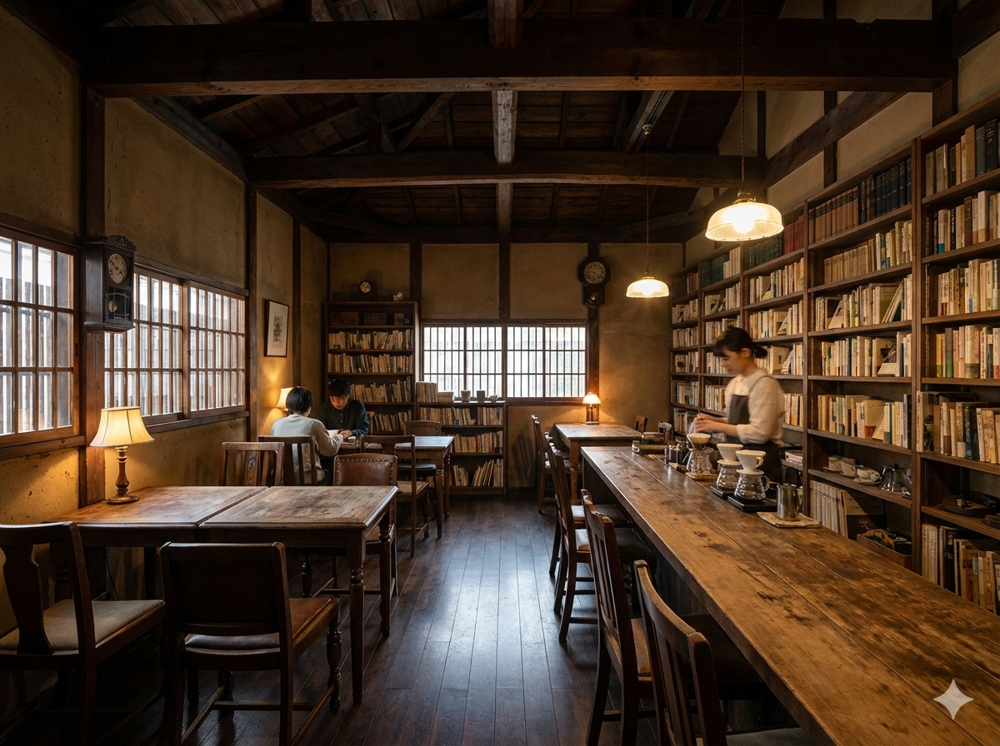

古書との偶然の出会い
先人の知恵を次世代へ
古いものに新たな価値を見出す。
手淹れコーヒーの香りに包まれた、
落ち着いた時間をお過ごしください。
静かな時が流れる場所で、
一冊の本と巡り会う。
記憶と文化をつなぐ、再会の栞。
当店は、古書の販売と手淹れスペシャルティコーヒーを提供するブックカフェです。
店員は過度な干渉をせず、お客様の好奇心にお任せします。 昔風の落ち着いた空間で、誰にも邪魔されないひとときをお楽しみください。
タラ・ブックス
インドの小さな出版社が手作業で作る、美しい絵本。 手漉きの紙にシルクスクリーンで刷られた一枚一枚は、 まるで夜の森に迷い込んだような深い黒と鮮やかな色彩を放ちます。 手触りも含めて味わっていただきたい一冊です。
三、五〇〇円
昔ながらの固め仕上げ
卵と牛乳、きび砂糖だけで作った素朴な味わい。 ほろ苦いカラメルソースが、珈琲の深みとよく合います。 少し固めの食感は、どこか懐かしい記憶を呼び覚ますようです。 読書のお供に、ぜひご賞味ください。
四五〇円
住所
〒601-9001
京都府京都市栞区土岐町11番地1
営業時間 十一時 〜 十九時
定休日 月曜日・火曜日
連絡先 075-1110-0829
© 2026 時の栞